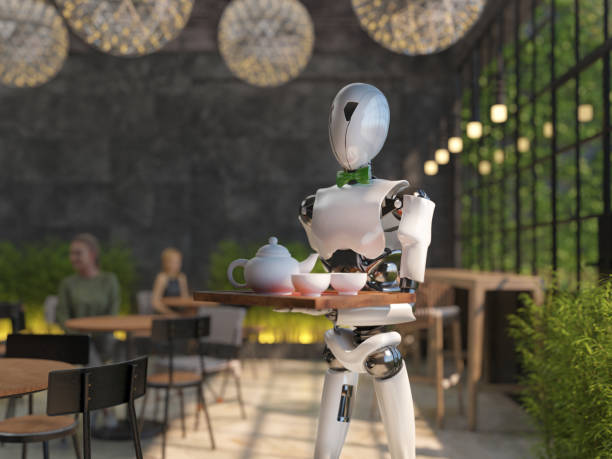

Our Services

Robotic Revolution: Transforming Hospitality in Hotels
In hotels, robots handle tasks like check-in, room service, cleaning, security, and entertainment. They enhance efficiency, enforce hygiene protocols, and complement human staff for a balanced guest experiences.

Complimentary Convenience: Embracing Free Delivery Services in Hotels
Many hotels now offer the added convenience of free delivery services to enhance guest experiences. Whether it's complimentary room service, amenity deliveries, or even local food options, this amenity aims Excellence
Ensuring Impeccable Hygiene: The Cornerstone of Hotel Excellence
Hygiene in hotels is a paramount aspect of guest satisfaction and safety. Establishing rigorous cleanliness standards and practices is crucial for maintaining a positive reputation and ensuring the well-being of guests.